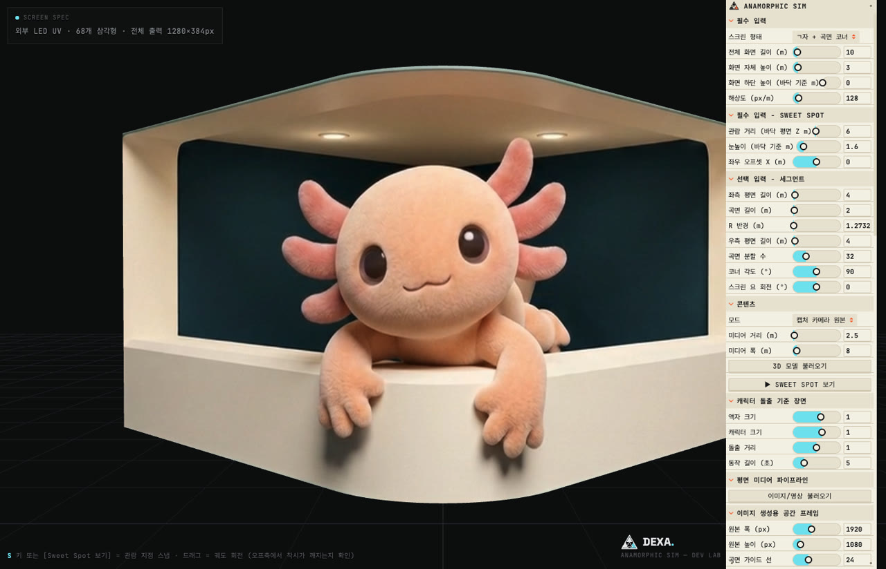

MEDIA ART PORTFOLIO DECK
빛과 소리로
남은 움직임.
보이지 않는 힘이
하나의 장면이 되는 순간.
육대근 (DECK)MEDIA ART / DEXA
전체 영상 보기
00:59 / 6144 × 2048
먹의 호흡두 폭의 산수, 한 호흡
Ink Breath · 2026
거문고 한 음마다 먹 알갱이가 모여 산수가 되고, 바람처럼 쓸려 다른 산수로 내려앉는다.
THE FILMS
영상 작품 08
장면을 선택해 전체 영상을 감상하세요.
표기된 재생 시간은 현재 감상용 파일 기준입니다. 작품은 전시·상영 환경에 맞춰 조정하거나 확장할 수 있습니다.


EXHIBITIONS & PROJECTS
전시·프로젝트 08
전시, 설치, 페스티벌과 오디오비주얼 작업.

01 / Music Video Audiovisual
Ultraviolet
로잘린송 첫 정규앨범 ‘Psytechnography’ 타이틀곡 MV 오디오비주얼 참여 — Audio Visual: Deck (Yook Dae Geun).
Official Music Video Visual-only · Psytechnographer
02 / Immersive Exhibition
상상유랑
1채널 파일럿 전시, 458 갤러리 — 텍스트가 공간으로 확장되는 이머시브 전시

03 / Festival Production
PRECTXE
Digital Media Art Festival General Production

04 / Generative Data Visualization
손의 잔향
회화적 선의 축적과 표면 — Rokkaku 작가의 핸드페인팅 감각을 전시 데이터 기반 520개 스트로크 시스템으로 복원. 토탈미술관 AI해커톤 선정작, 베를린 P61갤러리 전시

05 / Generative Data Visualization
혼돈의 호흡
입자 군집의 구성과 순환 — 108점의 작품 색채, 서울 겨울 기후, 관람객 통계를 9,000개 큐브 입자로 재구성. 토탈미술관 AI해커톤 선정작, 베를린 P61갤러리 전시

06 / Interactive Exhibition
소각장의 크리스마스
장소특정적 인터랙티브 체험 전시 — 부천아트벙커 B39

07 / Permanent Installation
잔광
장소특정적 상설 인스톨레이션 — 부천아트벙커 B39

08 / Creative Direction
잔다리페스타
Global Music Festival Creative Direction
01 / Music Video Audiovisual
Ultraviolet
Audiovisual contribution to the title-track music video for Rosalyn Song's album Psytechnography.
Credit: Audio Visual, Deck (Yook Dae Geun)
Official Music Video Visual-only · Psytechnographer02 / Immersive Exhibition
le voyage dans l'imagenation
A single-channel pilot exhibition at 458 Gallery where text expands into an immersive space.
Practice: Immersive exhibition
03 / Festival Production
PRECTXE
General production for a digital media art festival.
Role: General production
04 / Generative Data Visualization
Afterimage of the Hand
An exhibition-data-driven stroke system exploring the accumulation of painterly lines and the sensation of Rokkaku's hand painting. Selected at the Total Museum AI Hackathon and exhibited at P61 Gallery, Berlin.
Practice: Generative data visualization / Canvas 2D
05 / Generative Data Visualization
Breath of Chaos
Artwork colors, Seoul's winter climate and visitor statistics are reconfigured as a circulating field of cube particles. Selected at the Total Museum AI Hackathon and exhibited at P61 Gallery, Berlin.
Practice: Generative data visualization / Three.js
06 / Interactive Exhibition
Christmas at the Incinerator
A site-specific interactive exhibition at Bucheon Art Bunker B39.
Practice: Site-specific interactive experience
07 / Permanent Installation
Afterglow
A site-specific permanent installation at Bucheon Art Bunker B39.
Practice: Site-specific installation
08 / Creative Direction
Zandari Festa
Creative direction for a global music festival.
Role: Creative direction
THE ARTIST
육대근 DECK
인간의 앎은 공간, 빛, 소리로 물질화될 수 있는가.
육대근(DECK)은 「누스피어 레이어」라는 세계관 아래 실시간 시뮬레이션과 절차적 렌더링으로 작업하는 미디어 아티스트입니다. 직접 만든 시스템으로 움직임을 짓고, 소리와 빛이 서로에게 남기는 흔적을 바라봅니다.
Artist bio in English
Deck is a media artist working with real-time simulation and procedural rendering. Within his Noosphere Layer, he asks whether human knowing can be materialized in space, light and sound.
TOOLS & COLLABORATION
화면 너머의 공간으로.
Anamorphic Sim
AI를 활용한 아나모픽 영상 제작과 커브드 스크린에 맞춘 출력을 돕는 제작 도구입니다. 미디어월 파일럿, 아티스트 워크숍, 스크린 사양에 맞춘 작품 제작을 함께 논의합니다.
소개와 데모 보기
LET’S CONNECT
작품과 공간이 만날 때.
작품 검토와 전시·제작 협업 문의